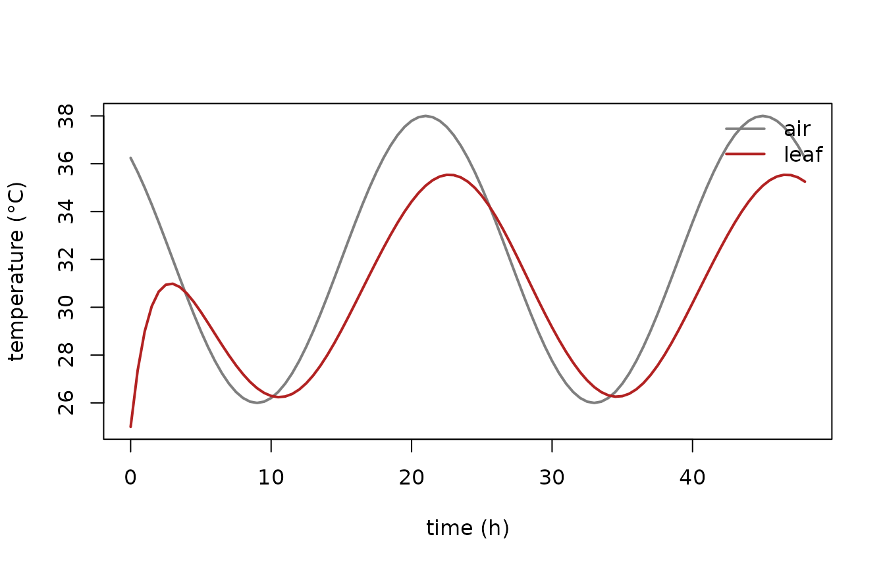
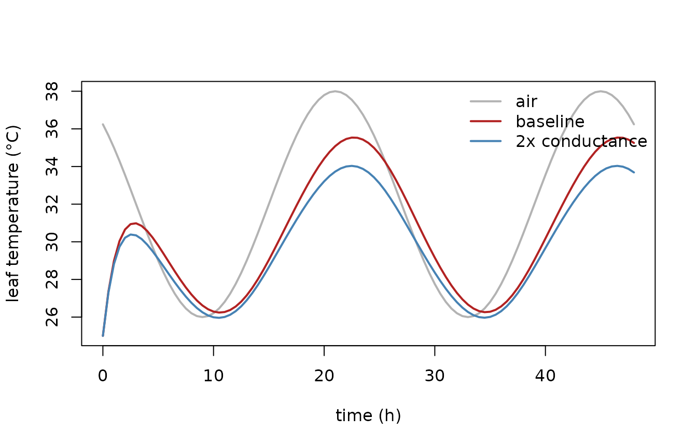

Building your own model with external drivers
Source:vignettes/articles/leaf-thermal.Rmd
leaf-thermal.RmdThe getting-started vignette
uses the Lorenz system, which ships compiled into the package. This
article shows the other half of the story: how to define your
own ODE system in C++ and drive it with external, time-varying
forcing. It is the workflow you would follow to use
odelia in your own project.
We use a simple leaf thermal model — a single ODE for leaf
temperature that is forced by air temperature (an external driver) and
cooled by transpiration. The complete, copy-able sources live in the
installed package under
system.file("examples/leaf_thermal", package = "odelia").
This is a website-only article rather than a packaged vignette, because it compiles model-specific C++ at build time. That keeps the package’s cross-platform
R CMD checkfast and toolchain-light.
Anatomy of an odelia model
A model that uses odelia is assembled from four
files:
| File | Role |
|---|---|
src/leaf_thermal_system.hpp |
The system: a C++ class defining the ODE. |
src/leaf_thermal_interface.cpp |
An Rcpp interface exposing the system to R. |
R/leaf_thermal_interface.R |
R6 wrappers giving a friendly R API. |
| this article | A runnable demonstration. |
The system contract
A system is a class templated on its scalar type T (so
the same code works with double and with the AD number
type). It must implement a small contract:
template <typename T = double>
class LeafThermalSystem {
public:
// number of state variables
size_t ode_size() const { return ode_dimension; }
// read state in from an iterator (and refresh drivers/rates)
template <typename Iterator>
Iterator set_ode_state(Iterator it, double time_);
// write the current state out to an iterator
template <typename Iterator>
Iterator ode_state(Iterator it) const;
// write the current rates (dy/dt) out to an iterator
template <typename Iterator>
Iterator ode_rates(Iterator it) const;
};Templating on T is what makes the system
AD-ready — see the parameter-fitting
vignette.
Drivers
External forcing enters through a drivers::Drivers
object. The system holds a reference to it and queries the current value
on each step:
void initialize_drivers(const drivers::Drivers &drv); // attach drivers
void set_drivers(); // query at current timeOn the R side, Drivers fits a smooth cubic-spline
interpolation through a time series, so the system can be evaluated at
any time the adaptive stepper lands on. A Drivers object
can hold several variables and accepts any time grid that covers the
simulation.
Compile the model
Compiling a model interface requires the odelia headers
on the include path. odelia_load_dll() makes the package’s
compiled symbols available to the temporary shared object that
Rcpp::sourceCpp() builds.
library(odelia)
odelia_load_dll()
ex_dir <- system.file("examples/leaf_thermal", package = "odelia")
# Put the odelia headers on the include path for sourceCpp
Sys.setenv(PKG_CPPFLAGS = paste0("-I", system.file("include", package = "odelia")))
# Compile the model-specific interface, then load the R6 wrappers
Rcpp::sourceCpp(file.path(ex_dir, "src", "leaf_thermal_interface.cpp"), verbose = FALSE)
source(file.path(ex_dir, "R", "leaf_thermal_interface.R"))Define drivers and run
Here the air-temperature driver is a sinusoidal daily cycle over two days.
# A daily temperature cycle
p <- list(Tmean = 32, Tamp = 6, tpeak = 15)
time_driver <- seq(0, 48, by = 0.25)
t_air <- p$Tmean + p$Tamp * sin(2 * pi * (time_driver - p$tpeak) / 24)
drivers <- Drivers$new()
drivers$set_variable("temperature", time_driver, t_air)
# Build the system with its parameters and drivers
pars <- LeafThermalSystemPars()
lz <- LeafThermalSystem$new(pars, drivers)
lz$set_state(c(25), 0) # initial leaf temperature, initial time
# Solve
ctrl <- OdeControl$new()
runner <- LeafThermalSolver$new(lz$ptr, ctrl$ptr, drivers$ptr)
times <- seq(0, 48, by = 0.5)
runner$advance_adaptive(times)
out <- runner$history()
out$time <- times
head(out)
#> # A tibble: 6 × 5
#> time T_LC T_air dT_LC S_tr
#> <dbl> <dbl> <dbl> <dbl> <dbl>
#> 1 0 25 36.2 5.55 0.0759
#> 2 0.5 27.4 35.7 3.94 0.211
#> 3 1 29.0 35 2.63 0.376
#> 4 1.5 30.0 34.3 1.62 0.505
#> 5 2 30.7 33.6 0.869 0.581
#> 6 2.5 30.9 32.8 0.306 0.615
plot(out$time, out$T_air,
type = "l", col = "grey50", lwd = 2,
xlab = "time (h)", ylab = "temperature (°C)",
ylim = range(out$T_air, out$T_LC)
)
lines(out$time, out$T_LC, col = "firebrick", lwd = 2)
legend("topright",
legend = c("air", "leaf"),
col = c("grey50", "firebrick"), lwd = 2, bty = "n"
)
The leaf temperature tracks the air temperature but is buffered by transpirational cooling — exactly the behaviour we expect.
Comparing strategies
Because building and running a system is cheap, comparing parameterisations is just a loop. Here we double the maximum transpiration conductance and re-run:
run_strategy <- function(g_tr_max) {
pars <- LeafThermalSystemPars()
pars$g_tr_max <- g_tr_max
lz <- LeafThermalSystem$new(pars, drivers)
lz$set_state(c(25), 0)
runner <- LeafThermalSolver$new(lz$ptr, ctrl$ptr, drivers$ptr)
runner$advance_adaptive(times)
runner$history()$T_LC
}
base_g <- LeafThermalSystemPars()$g_tr_max
T_baseline <- run_strategy(base_g)
T_high_cond <- run_strategy(2 * base_g)
plot(times, out$T_air,
type = "l", col = "grey70", lwd = 2,
xlab = "time (h)", ylab = "leaf temperature (°C)",
ylim = range(out$T_air, T_baseline, T_high_cond)
)
lines(times, T_baseline, col = "firebrick", lwd = 2)
lines(times, T_high_cond, col = "steelblue", lwd = 2)
legend("topright",
legend = c("air", "baseline", "2x conductance"),
col = c("grey70", "firebrick", "steelblue"), lwd = 2, bty = "n"
)
Higher conductance means stronger transpirational cooling, so the leaf stays closer to — or below — air temperature at the hottest part of the day.
Where next
- The full, copy-able sources are in
system.file("examples/leaf_thermal", package = "odelia")— start there when building your own model. - To calibrate a model’s parameters against data using exact gradients, see the parameter-fitting vignette.